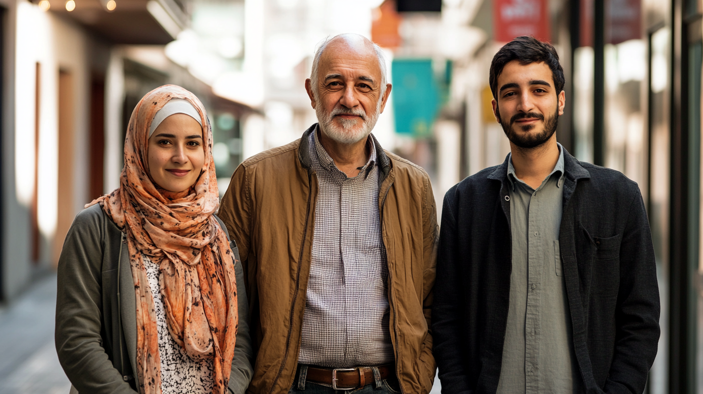

Empowering Displaced Communities
Committed to leveraging design and technology to empower displaced communities, shaping a world where everyone has the opportunity to thrive with dignity.
About OFFicial
Our Mission
At OFFicial, we are a vital ally for people who are forced to leave behind their homes, lives, and everything they know and face precarious conditions upon arriving in a new country. In an interconnected and technologically advanced world, our mission is to support and empower these individuals who are constantly pursuing a dignified and secure life.
What We Do
We use innovation and prospective design to create future-oriented artifacts that promote collective reflection and drive social change. We transform refugees' complex realities, projecting effective solutions for the near future. Our approach focuses on:
- Simplification: We significantly reduce the processing times for asylum applications through deeply empathetic and human interactions.
- Automation: We alleviate the administrative burden on institutions and streamline processes by integrating advanced intelligent technologies.
- Facilitating Integration: We build bridges of support that enable agile and meaningful integration into host communities, providing services that interpret and assist refugees at every step.
- Building Trust: In a constantly changing global environment, we offer clarity and eliminate uncertainty for refugees, ensuring a secure and understandable experience.
Our Partners
We work alongside leading humanitarian organizations to create meaningful impact for displaced communities worldwide.


Our Context
Here in Spain, the asylum application process is digitalized and unified through technology under state control in the Refugee Offices. This transformation has fundamentally changed how our society integrates displaced communities.
The Current Landscape
Our society has evolved across multiple dimensions, creating both opportunities and challenges for refugee integration:
🏛️ Political Dimension
Our political landscape is characterized by increased social polarization around refugees—more people are integrators, but opposition has also become more vocal.
- Disturbances occur in some refugee neighborhoods
- Solidarity collectives have emerged across cities
- Integration is easier for many migrants due to greater empathy
- Digitalization eliminates misunderstandings about processes
- Greater state control coexists with increased cybernetic crimes
- Digital clandestinity exists where resources are sold to those not admitted
- New political parties support refugees—some mayors are former refugees themselves
💰 Economic Dimension
Cost reductions through digitalization of bureaucratic processes have reshaped public spending:
- Social responsibility platforms connect refugees (tax incentives for housing, employment on digital platforms)
- Public spending has been reallocated to other state areas
- Server farms have multiplied significantly
- Electricity consumption and non-renewable materials use has increased
- Environmental collectives demand zero-carbon footprints for these services
🎭 Cultural Dimension
Cultural richness, acceptance, and bilateral information exchange about refugee countries of origin has flourished:
- New professions and organizations represent the refugee collective—many are advised by refugees themselves
- A refugee solidarity movement has emerged (similar to past social movements)
- Strategic design services specialized in refugee-technology intersection have proliferated
💻 Technological Dimension
The existence of WELCOME has fundamentally changed technological interaction for refugees and asylum seekers:
- Refugees have greater autonomy than ever before
- Communication, navigation, and information access is simpler and more accurate
- Clandestine forums exist, and some need to minimize digital footprints
- Digital services for refugees group all necessary functions in one place
Why This Matters
This context shapes everything we do at OFFicial. WELCOME exists because of—and responds to—these realities. Our system addresses not just the symptoms but the systemic challenges of integration in this complex landscape.
We operate in a world where technology can bridge gaps, but also where digital divides exist. Where solidarity movements thrive, but opposition remains. Where state systems are more efficient, but privacy and agency are more important than ever.
Our Design Principles
The design of WELCOME is not neutral. Our product is intentionally built around the values we represent as a company:
We are optimistic, not utopian
We believe in positive change while acknowledging real constraints and challenges. Our solutions are grounded in reality.
The future is stories about change
Built in the present. We contribute to building a more sustainable, supportive, and equitable society through action today.
We design from data, for everyone
No one gets left behind. Data informs our decisions, but human dignity guides them always.
Technology is a tool for solving problems
Not a place to spend time. The right amount of technology is the minimum necessary to solve a problem effectively.
Trust grows with transparency
We simplify processes to make them accessible and understandable. Complexity breeds distrust; clarity builds confidence.
We design for before and after
Meaningful change requires bold thinking. We create solutions that fundamentally transform experiences.
If we believe something is possible
We strive to change it, and we calmly accept what we cannot. Focus and acceptance in balance.
What matters to people matters to us
Human needs drive our priorities. What's important to those we serve is important to our organization.
Responsible Design Philosophy
At OFFicial, we follow Responsible Design principles across all our work:
- Sustainability: Design as a means for environmental and social sustainability
- Risk Minimization: Products that minimize obsolescence and environmental impact
- Careful Material Selection: Materials chosen to reduce environmental footprint
- Longevity: Designed for extended duration and value
- Innovation in Recycling: Reducing both carbon footprint and waste generation
Modular Design Approach
OFFicial applies Modular Design because:
- Any current product type can be adapted without reinventing manufacturing processes
- Modularity provides agility—no large amounts of obsolete inventory when markets change
- More manageable for people—module replacement instead of total replacement
- Encourages broader adoption through flexibility
- Aesthetic personalization adapts to personal styles
- People trust they're not wasting their investment

The WELCOME System
OFFicial's flagship product supports refugees through every step of their journey. Powered by advanced Artificial Intelligence, WELCOME simplifies, automates, and personalizes the asylum process and integration into the community.
What WELCOME Is
WELCOME is a Conversational Assistant powered by Voice AI. Through connection with a wearable technology accessory (wristband), it collects data from asylum seekers to support their integration and adaptation. It helps integration into host communities through a voice guide, simplifying comprehension and adaptation to the environment while offering personalized services.
Designed for Everyone
For Refugees
"As a refugee, I WANT to complete the asylum application process successfully so I can live a dignified life in my new country, with the help of WELCOME."
"As a refugee, I WANT to fully integrate into society so I can be accepted as a full citizen through the support of WELCOME."
"As a refugee, I WANT to secure housing and meaningful employment so I can ensure a stable future for my family, facilitated by WELCOME."
For NGOs
"As an NGO, I WANT to provide refugees with a structured welcome and essential, firsthand information so they can integrate smoothly into the community, with WELCOME's guidance."
"As an NGO, I WANT to assist refugees consistently, so the asylum evaluation process becomes more efficient, using WELCOME as a tool."
For the State
"As the State, I WANT to collect information about asylum seekers, so the application process is fairer and more transparent, supported by WELCOME."
"As the State, I WANT to immediately scan and authenticate asylum seekers, so their identification can be verified quickly and easily, through WELCOME."
Core Services
🏛️ Legal Support
Navigate the complex asylum process with confidence:
🏠 Housing
Find safe, appropriate accommodation at every stage:
💼 Employment
Build your professional future:
👥 Community
Connect and integrate into your new home:
Technical Features
Conversational Interface
Smart Integration
Personalized Support
Privacy & Data Rights


As a conversational assistant, the weight of the graphical interface is drastically reduced. People are accustomed to interacting with digital services through natural interfaces, but visual output ensures messages are received correctly.
It's necessary to visually communicate certain states of the assistant, especially when it cannot communicate orally—when disconnected or disabled for privacy reasons.
Another context where visual support is needed is navigation prompts or choosing options (e.g., a calendar).
Beyond these situations, interaction with WELCOME takes the form of background dialogue, allowing the mobile device to be used for any other function while the assistant interacts either on its own initiative (a reminder) or by invocation (e.g., "WELCOME, what is the deadline for submitting my residency application?").
Physical Device: Biometric Data Wristband
The WELCOME wristband is a complementary device providing advanced security and health functions:
- Design and Functionality: Biometric sensors that measure heart rate, body activity, and respiration
- NFC Chip: Stores data for temporary personal identification, enabling secure, contactless access
- Battery Life: Up to 72 hours with rechargeable lithium-ion battery
- Compatibility: Works with iOS, Android, and Huawei for seamless integration
- App Connectivity: Syncs with the WELCOME App, can be used with or without headset
WELCOME Offices
Physical touchpoints complement our digital service:
- Biometric registration and verification
- In-person legal consultations
- Technology access points
- Community gathering spaces
- Document printing and certification
- Emergency support services
Design Language
The development of the graphic elements that make up WELCOME is based on two fundamental guidelines: the design principles by which OFFicial operates and the work developed by Syrian graphic designer and refugee Yara Said.
Color Palette
Our color palette reflects solidarity, warmth, and clarity. The orange evokes energy and hope, while the dark neutrals provide a calm, focused environment for those navigating complex processes.
Primary actions, emphasis, warmth
Main background, calm foundation
Cards, elevated surfaces
Primary text, high contrast
Secondary text, subtlety
Typography
We use DM Mono, a monospaced typeface that conveys clarity, precision, and technological reliability. Monospace fonts create a sense of transparency—every character takes equal space, suggesting fairness and equal treatment. This choice reflects our commitment to accessibility and straightforward communication.
WELCOME
Empowering Communities
DM Mono Regular
ABCDEFGHIJKLMNOPQRSTUVWXYZ
abcdefghijklmnopqrstuvwxyz
0123456789 !@#$%&*
Why Monospace?
- Clarity: Each character is distinct and easily readable, crucial for people learning a new language
- Equality: Every letter takes the same space—a visual metaphor for equal treatment
- Technical Trust: Monospace fonts signal precision, reliability, and systematic thinking
- Accessibility: High readability for people with dyslexia and visual processing differences
- Digital Native: Feels contemporary and tech-forward without being cold
Visual Inspiration: Refugee Nation
In 2015, the civil war in Syria, extreme poverty in Niger, and political persecution in Afghanistan and Iraq led to one of the largest migration crises in history. The Rio 2016 Olympic Games joined Amnesty International's Refugee Nation initiative, registering a team of 10 refugee athletes as a symbolic gesture to make the crisis visible. This initiative continued for Tokyo 2020 Olympics with 29 athletes.
Although not officially recognized by the International Olympic Committee, as part of this visibility campaign, a team of creatives developed distinctive graphic elements, most importantly the Refugee Nation flag.
Value Proposition
For Refugees & Asylum Seekers
- Simplification: Navigate complex systems with confidence
- 24/7 Support: Help when you need it, in your language
- Empowerment: Information and tools to take control of your journey
- Connection: Find community, resources, and opportunities
- Dignity: Respect and agency at every step
- Privacy: Your data, your control
- Integration: Practical support for building your new life
For Spanish State & Government
Why WELCOME benefits Spain:
- Efficiency: Rapid, centralized access to asylum seeker documentation
- Real-Time Data: Daily updated statistics improve bureaucratic processes
- Transparency: More equal and transparent asylum application evaluations
- Cost Reduction: Automation of delicate process parts
- Better Outcomes: Higher successful integration rates
- Reduced Processing Times: Average processing reduced significantly
- Data-Driven Policy: Evidence-based improvements to asylum system
State Data Access:
- Temporal identification (census, health card, employment, housing, application status)
- Aggregated/anonymized biometric data shown as statistics (not individuals), detecting moments of greatest stress for professional intervention
Goals of WELCOME
- Facilitate access to basic services: healthcare, social services, housing, pensions, transport, schooling
- Apply coherent policies based on human rights and human dignity
- Explore alternative forms and interactions for Voice AI
- Analyze how digital technology factors relate to innovation and social impact for migrants and asylum seekers
- Design the most perfect experience where devices blend into the background, improving life effortlessly
Viability
Technical Viability
At OFFicial we follow Responsible Design principles with considerations for:
- Sustainability as core principle
- Modularity allowing adaptation without reinventing processes
- Longevity through thoughtful design
- Economic viability through cloud infrastructure and partnerships
- Legal viability considering confidential data and state security
Economic Viability
OFFicial operates through viable business models:
- Google Impact Challenge™: Foundation support for social impact organizations
- Skilllab BV™ (Low Countries): Employment service integration with IA-powered recommendations
- Solferino Academy™: Supporting transformation toward prosperous future through complex changes
Legal Viability
As WELCOME information and data is considered confidential and involves state security, digital identification support and systems are critically important:
- Flexibility and durability for operations (e.g., in natural disasters or migration scenarios)
- Biometric identification principle based on wearables is simpler than guaranteeing non-falsifiability
- Security methodology permits recognition of non-transferable physical characteristics
- System supervised by public officials and NGO workers at registration
Impact Stories
WELCOME is transforming lives by providing refugees with the tools and support they need to rebuild their futures with dignity.
What People Say
"Through WELCOME, I found a lifeline in a sea of uncertainty. It's more than a tool; it's a guide that empowers and restores a sense of control in the most vulnerable moments."
- Leila Hussein (35), Human Rights Advocate and Refugee
"WELCOME is more than just technology; it is a bridge of hope that transforms the unknown into something familiar and supportive."
- Misha Al Numan (62), Chemical Engineer and Refugee
"For many of us, starting over means facing countless barriers. WELCOME has given me the courage to navigate a complex system with confidence, making integration feel achievable rather than overwhelming."
- Ahmed Khalil (29), Former Teacher and Asylum Seeker
Our Team
Jorge Gil Rodríguez
Lead UI Designer / Interaction Designer Jr.
Graduated in Audiovisual Communication. He has developed his career in diverse fields, such as audiovisual production, graphic design, and DIY event curation and management, with social innovation as a common thread.
"Deeply convinced that design and technology should serve communication between people, and not the other way around, and with a life trajectory in community organizations, we create WELCOME to impact, facilitate, and streamline the management of situations of vulnerability, particularly in the asylum application process for refugees by the principles of the Geneva Convention."
Eider Fernández Arcos
Lead Product Designer / Researcher Jr.
Graduated in Product Design from UDIT, she complements her education with a Master's in User Experience Design for Products and Services from the same institution. Currently, she focuses on creating and managing communities, organizing events and meetups to attract opportunities, and establishing relationships with key players in the design sector.
"I believe in design as a tool to move forward, and through my work, I feel obligated to respond to any stimulus that arises from observing situations or needs, using the natural user experience-based design process. I believe designers have that superpower and that creativity and empathy are our greatest allies in addressing it."
Nicolás Bronzina
Lead Researcher / UI Designer Jr.
As a Design Researcher, he focuses on enriching and advancing the speculative aspects of design through extensive research, diegetic prototyping, and translating conceptual frameworks into tangible ideas.
"Due to my personal interest in social issues, particularly those affecting vulnerable populations, and my academic background as a Sociologist, the personal purpose of this project is to understand, from my perspective as a foreigner in Spain, the life stories, needs, and challenges of refugees in Spain. I seek to empathize with them and find possible solutions from my place in society and as part of the OFFicial team."
Contact Us
Interested in collaborating or learning more? Reach out, and let's make a difference together.
About This Project
This website and its artifacts present a speculative future scenario—a "what if" exploration of how design and technology could support displaced communities.
The content you've experienced is part of a Design Fiction project created as the Final Master's Thesis at UDIT Madrid:
"User Experience Design as a Tool for Social Intervention in the Refugee Crisis"
Created by:
Nicolás Bronzina, Eider Fernández Arcos, and Jorge Gil Rodríguez
We used an approach called Design Fiction to envision, design, and move toward desirable futures rather than passively accepting what is and "will be" the so-called refugee crisis. By creating detailed, believable artifacts set in 2030, we aim to provoke discussion, inspire action, and demonstrate how UX design can serve as a vehicle for social intervention.
The WELCOME system, OFFicial consultancy, partnerships, and testimonials are fictional elements designed to make this possible future tangible and discussable.
For more information about this project, please contact:
Nicolás Bronzina